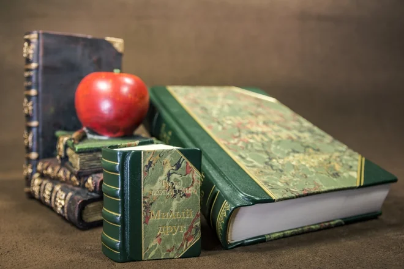
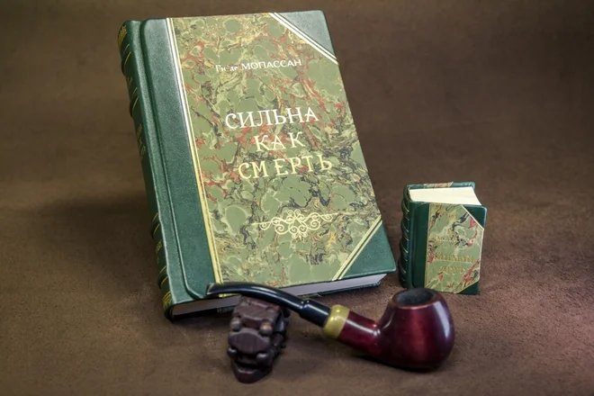
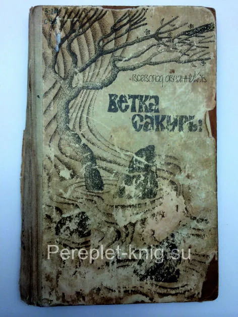
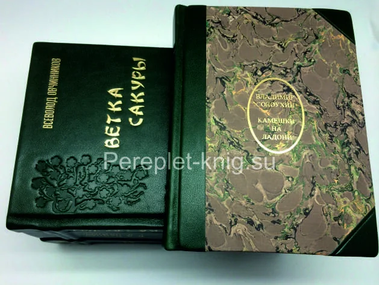
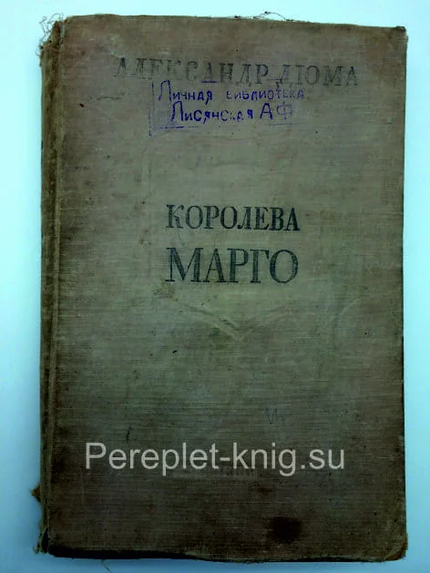
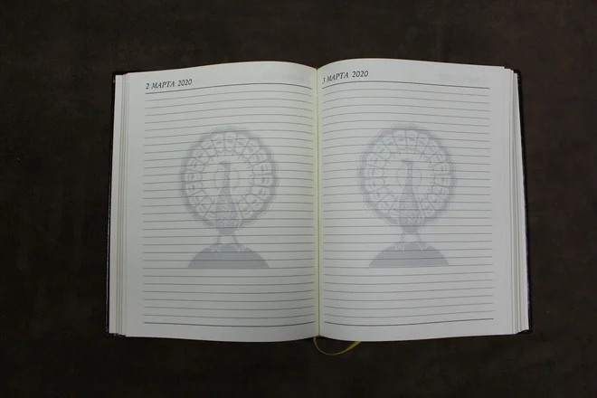

Разворот фотоальбома
Подобрать страницы
Напечатанные листы собирают в нужном порядке. При шитье из них сначала формируют тетради.
Переплётная мастерская · Москва
Печатаем от одного экземпляра, переплетаем новые книги и восстанавливаем старые.
Конструкция книги
Сначала решите, какой будет обложка. Отдельно выбирают, как скрепить страницы внутри неё.

Ручной переплёт
В полукожаном варианте мастер соединяет два материала. На сторонках остаётся виден мраморный рисунок бумаги, а на сгиб и уголки ложится кожа.
Листы складывают в тетради и сшивают. Корешок округляют, оформляют поперечными бинтами и наносят название. У собрания из нескольких томов надписи и орнамент можно выстроить в один ряд.
Выбрать французский переплёт

Работа переплётчика
Мастер согласует эскиз и материал, собирает крышку, готовит блок и соединяет обе части форзацами. На схеме видно, как листы ложатся между двумя сторонками.
Напечатанные листы собирают в нужном порядке. При шитье из них сначала формируют тетради.

К корешку приклеивают каптал и ленту-закладку. По заказу обрез окрашивают, золотят или расписывают.

На крышку наносят тиснение. Готовый блок вклеивают в переплёт и оставляют книгу просохнуть.
Ремонт старых книг
В этой серии мастерская перепрошила блоки, заменила форзацы и сделала новые крышки с бинтами и матовым золотым тиснением. На фотографиях можно проследить судьбу одной книги и увидеть весь заказ.


«Королева Марго» тоже приехала с потёртой обложкой. На общем снимке после ремонта можно прочитать её название на новом корешке.


Для оценки нужны размеры и фотографии крышек, корешка и повреждённых страниц. Стоимость зависит от состояния блока.
Описать свою книгуОтделка и инструменты
Рисунок можно вдавить в материал без краски или перенести фольгой. Узор задаёт клише. В этой подборке рядом стоят инструменты, оттиск и готовые работы.

Светлое клише лежит рядом с рельефным рисунком на тёмном материале.
К печати
Типография просит передавать обложку, блок и форзац отдельными PDF в размере готового изделия.

Две схемы набраны на соседних страницах раскрытой книги.
Мастерская указывает ориентир от 6 000 ₽ за целую книгу. Калькулятор считает отдельно стоимость переплёта обложки. Для сметы на издание нужны макеты, объём и тираж.
Заказ онлайн
Выберите формат, тираж и материал в конструкторе. Готовое описание можно скопировать и обсудить с переплётчиком.